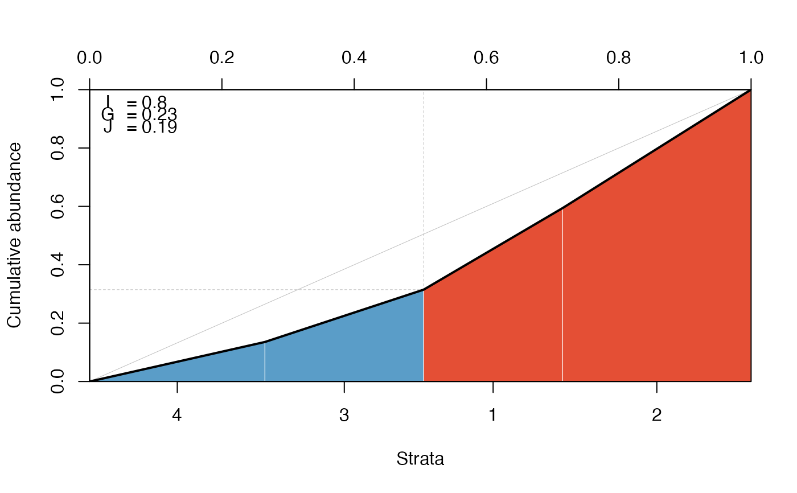
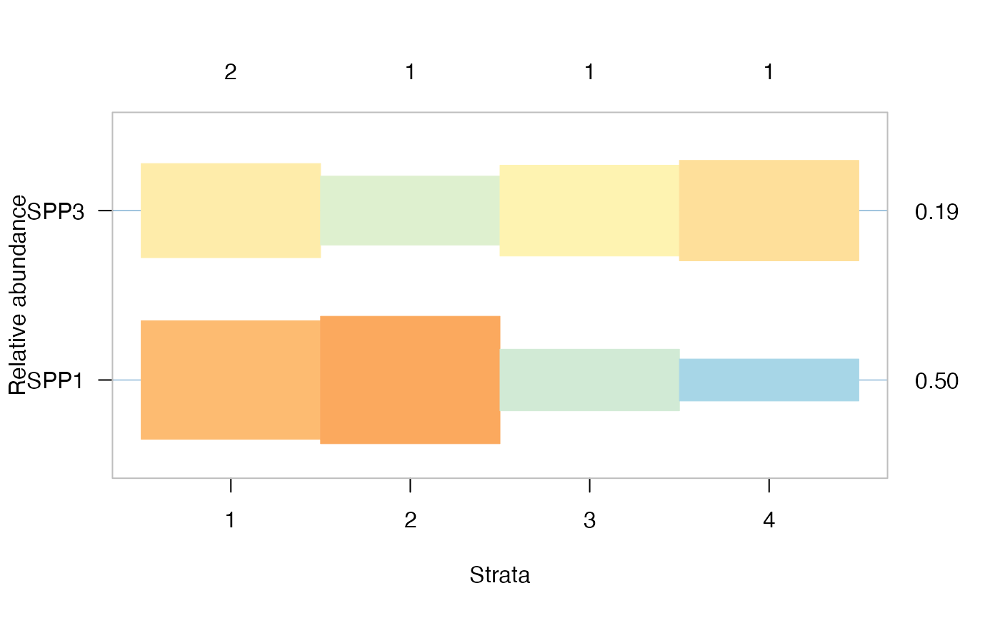

Multi-level Response Model
multicut.RdThe functions fits the multi-level response model for each species, possibly controlling for modifying/confounding variables.
Usage
multicut1(Y, X, Z, dist = "gaussian", sset=NULL, ...)
multicut(...)
# Default S3 method
multicut(Y, X, strata, dist = "gaussian",
sset=NULL, cl = NULL, ...)
# S3 method for class 'formula'
multicut(formula, data, strata, dist = "gaussian",
sset=NULL, cl = NULL, ...)
# S3 method for class 'multicut'
bestmodel(object, which = NULL, ...)
# S3 method for class 'multicut'
bestpart(object, ...)
# S3 method for class 'multicut'
strata(object, ...)
# S3 method for class 'multicut'
getMLE(object, which, vcov=FALSE, ...)
# S3 method for class 'multicut'
subset(x, subset=NULL, ...)
# S3 method for class 'multicut'
fitted(object, ...)
# S3 method for class 'multicut'
predict(object, gnew=NULL, xnew=NULL, ...)
# S3 method for class 'multicut'
plot(x, which = NULL, cut, sort,
las, ylab = "Relative abundance", xlab = "Strata",
show_I = TRUE, show_S = TRUE, hr = TRUE, tick = TRUE,
theme, mar = c(5, 4, 4, 4) + 0.1, bty = "o",
lower = 0, upper = 1, pos = 0, horizontal=TRUE, ...)
# S3 method for class 'multicut1'
plot(x,
ylab = "Relative abundance", xlab = "Strata", ...)
lcplot(x, ...)
# S3 method for class 'multicut1'
lcplot(x,
ylab="Cumulative abundance", xlab="Strata",
bty = "o", theme, ...)
# S3 method for class 'multicut1'
print(x, digits, ...)
# S3 method for class 'multicut'
print(x, digits, ...)
# S3 method for class 'summary.multicut'
print(x, cut, sort, digits, ...)
# S3 method for class 'multicut'
summary(object, ...)
# S3 method for class 'multicut'
as.data.frame(x,
row.names = NULL, optional = FALSE, cut, sort, ...)
# S3 method for class 'summary.multicut'
as.data.frame(x,
row.names = NULL, optional = FALSE, cut, sort, ...)Arguments
- formula
two sided model formula, response species data (matrix, or possible a vector for single species case) in the left-hand side, model terms for modifying effects in the right-hand side (its structure depending on the underlying functions). For example, in the most basic Gaussian case it can be
y ~ 1(no modifying variables) ory ~ x(with modifying variables). Centering the modifying terms (or choosing the origin wisely) is generally recommended (especially for Gaussian distribution where linear predictors are additive on the response scale) because the relative abundance contrasts are estimated at the origin (0).- data
an optional data frame, list or environment containing the variables in the model. If not found in data, the variables are taken from
parent.frame(), typically the environment from whichmulticutis called.- strata, Z
a factor, unique values define strata (must have at least 2 unique levels, empty levels are dropped).
- dist
character or function, a distribution to fit. If character, it can follow one of these patterns:
"family", or"family:link"when appropriate (there is alinkargument in the underlying function, or the link can be specified via thefamilyargument). See Details onopticutpage and Examples.- sset
an optional vector specifying a subset of observations (rows) to be used in the fitting process.
NULLmeans no subset taken.- cl
a cluster object, or an integer for multiple cores in parallel computations (integer value for forking is ignored on Windows).
- Y
numeric vector of observations for
multicut1, vector or community matrix formulticut.default.- X
numeric, design matrix for possible confounding/modifier variables. Can be missing, in which case an intercept-only model is assumed.
- x, object
object to plot, print, summarize.
- cut
log likelihood ratio value to be used as a cut-off for showing species whose log likelihood ratio is not less than the cut-off.
- sort
logical value indicating if species/partitions should be meaningfully sorted, the default is
TRUE. It can take numeric value when only species (1) or partitions (2) are to be sorted (1:2is equivalent toTRUE).- show_I
logical, if indicator potential (I) should be shown.
- show_S
logical, if number of indicator species should be shown.
- hr, tick
logical, if horizontal rules (
hr) and ticks to the axis legends (tick) should be added. Default isTRUEfor both.- theme
color theme as defined by
occolors.- mar
numeric, graphical parameters for plot margin
par.- ylab, xlab, las
graphical arguments, see
plot. By default,lasis 1 whenhorizontal = TRUEand 2 whenhorizontal = FALSE.- bty
Character, determines the type of box which is drawn around plots, see
par.- lower, upper
numeric (between 0 and 1),
loweris the minimum andupperis the maximum height for rectangles drawn in the plot. Both need to be in [0, 1] andhighercannot be smaller thanlower.- pos
numeric, position of rectangles in the plot relative to the baseline. Value must be in the [-1, 1] range (below vs. above baseline).
- horizontal
logical, plot orientation: species as rows (
TRUE) or as columns (FALSE).- digits
numeric, number of significant digits in output.
- which
numeric or character (can be a vector) defining a subset of species from the fitted object, or
NULL(all species, default).- row.names
NULLor a character vector giving the row names for the data frame. Missing values are not allowed. Seeas.data.frame.- optional
logical. If
TRUE, setting row names and converting column names (to syntactic names: seemake.names) is optional. Seeas.data.frame.- subset
logical, numeric, or character index indicating species to keep, missing values are not accepted. The default
NULLreturns the original object without subsetting.- vcov
logical, if variance-covariance matrix is to be returned.
- gnew, xnew
new values for
strataand modifiers (right-hand-side of formula) to predict for, orNULL.- ...
other arguments passed to the underlying functions.
Warning
The use of the multicut1 function is generally discouraged:
some of the internal checks are not guaranteed to
flag issues when the formula-to-model-matrix translation is side-stepped
(this is what is happening when the modifier variables are supplied
as X argument in multicut1).
Use the multicut function with a single species instead.
Value
multicut1 returns an object of class 'multicut1'.
multicut returns an object of class 'multicut', that is a list
with the following components:
"call"the function call.
"species"a list of species specific multicut1 objects.
"X"modifying variables as model matrix.
"Y"response, single species vector or matrix.
"strata"defines the stratification.
"nobs"sample size.
"sset"subset, if specified.
"dist"distribution.
"failed"IDs for failed species models dropped from results list.
The strata method extracts the strata argument
as factor.
The print and summary methods are called for their side effects
showing expected values, and log likelihood ratio (logLR).
Optimal binary partitions are determined as part of the
summary based on Lorenz-tangent based thresholding,
which requires nonnegative expected values.
Indicator potential (I) is based on largest the
contrast (difference) between the minimum and maximum
estimates on the linear predictor (link) scale.
The subset method subsets the species in the multicut object.
The plot method presents the estimates by species and strata.
The lcplot method plots the Lorenz curve for a single
species 'multicut1' object.
bestpart returns a matrix with the best supported
partitions for each species (samples and rows, species as columns).
Binary partitions are based on Lorenz-tangent based optimal threshold
(see lorenz).
lorenz requires nonnegative fitted values
which is not guaranteed under dist = "gaussian" with identity
link, see fix_fitted ocoptions setting
for how to resolve this (choosing a different link function,
distribution, or centering modified variables is advised).
bestmodel returns the best supported model for further
manipulation (e.g. prediction). Note: custom distribution
functions are designed to return only point estimates,
thus the best model cannot be returned. In this case,
use the best partition returned by bestpart to refit the model.
getMLE returns a named list corresponding to the best supported
model. The list has the following elements:
coef is the Maximum Likelihood Estimate (MLE),
vcov is the variance-covariance matrix for the MLE or NULL,
dist is the distribution inherited from input object.
fitted returns expected values on the predictor scale
for the observations as a matrix (number of observations by number of species).
predict returns fitted values when both gnew
and xnew are NULL, or corresponding point predictions
(expected values) on the predictor scale.
The coercion methods as.data.frame return a data frame.
See also
lorenz Examples for how multi-level partitions are binarized
using the Lorenz-tangent approach.
opticut for optimal binary response model,
optilevels for finding the optimal number of factor levels.
beta2i for indicator potential (I) calculations in summaries.
bestmodel, bestpart, and uncertainty
for manipulating fitted objects.
ocoptions on how to set some of the global options
related to the presentation of the results in the package
and how errors encountered during model fitting are handled.
Examples
## --- Gaussian
## simple example from Legendre 2013
## Indicator Species: Computation, in
## Encyclopedia of Biodiversity, Volume 4
## https://dx.doi.org/10.1016/B978-0-12-384719-5.00430-5
gr <- as.factor(paste0("X", rep(1:5, each=5)))
spp <- cbind(Species1=rep(c(4,6,5,3,2), each=5),
Species2=c(rep(c(8,4,6), each=5), 4,4,2, rep(0,7)),
Species3=rep(c(18,2,0,0,0), each=5))
rownames(spp) <- gr
## must add some noise to avoid perfect fit
spp[6, "Species1"] <- 7
spp[1, "Species3"] <- 17
spp
#> Species1 Species2 Species3
#> X1 4 8 17
#> X1 4 8 18
#> X1 4 8 18
#> X1 4 8 18
#> X1 4 8 18
#> X2 7 4 2
#> X2 6 4 2
#> X2 6 4 2
#> X2 6 4 2
#> X2 6 4 2
#> X3 5 6 0
#> X3 5 6 0
#> X3 5 6 0
#> X3 5 6 0
#> X3 5 6 0
#> X4 3 4 0
#> X4 3 4 0
#> X4 3 2 0
#> X4 3 0 0
#> X4 3 0 0
#> X5 2 0 0
#> X5 2 0 0
#> X5 2 0 0
#> X5 2 0 0
#> X5 2 0 0
## negative expected values are not good
oco <- ocoptions(fix_fitted=TRUE)
summary(ocall <- multicut(spp ~ 1, strata=gr, dist="gaussian"))
#> Warning: Negative fitted values found for 2 species.
#> Multivariate multticut results, dist = gaussian
#>
#> Call:
#> multicut.formula(formula = spp ~ 1, strata = gr, dist = "gaussian")
#>
#> Species models with logLR >= 2:
#> split assoc I logLR
#> Species2 X1+X2+X3 +++ 0.9993 32.53
#> Species1 X2+X3 +++ 0.9705 52.87
#> Species3 X1 +++ 1.0000 91.55
#>
summary(multicut(spp, strata=gr, dist="gaussian")) # alternative
#> Warning: Negative fitted values found for 2 species.
#> Multivariate multticut results, dist = gaussian
#>
#> Call:
#> multicut.default(Y = spp, strata = gr, dist = "gaussian")
#>
#> Species models with logLR >= 2:
#> split assoc I logLR
#> Species2 X1+X2+X3 +++ 0.9993 32.53
#> Species1 X2+X3 +++ 0.9705 52.87
#> Species3 X1 +++ 1.0000 91.55
#>
ocoptions(oco) # reset options
## --- Binomial
## simulated binary data
set.seed(1234)
n <- 200
x0 <- sample(1:4, n, TRUE)
x1 <- ifelse(x0 <= 2, 1, 0)
x2 <- rnorm(n, 0.5, 1)
p1 <- plogis(-0.5 + 2*x1 + -0.8*x2)
Y1 <- rbinom(n, 1, p1)
p2 <- plogis(-0.1 + 2*ifelse(x0==4,1,0) + -0.8*x2)
Y2 <- rbinom(n, 1, p2)
p3 <- plogis(-0.1 + -0.8*x2)
Y3 <- rbinom(n, 1, p3)
Y <- cbind(SPP1=Y1, SPP2=Y2, SPP3=Y3)
X <- model.matrix(~x2)
(m0 <- multicut1(Y1, X, as.factor(x0), dist="binomial"))
#> Univariate multicut results, dist = binomial
#> logLR = 17.77 (logL_null = -132.3)
#>
#> Expected values:
#> 1 2 3 4
#> 0.7260 0.7771 0.4076 0.2789
#>
lcplot(m0)

summary(m1 <- multicut(Y ~ x2, strata=x0, dist="poisson"))
#> Multivariate multticut results, dist = poisson
#>
#> Call:
#> multicut.formula(formula = Y ~ x2, strata = x0, dist = "poisson")
#>
#> Species models with logLR >= 2:
#> split assoc I logLR
#> SPP1 1+2 +++ 0.5048 8.894
#> SPP2 4 ++ 0.3644 5.902
#> 1 species not shown
#>
plot(m1)

## subset results
summary(subset(m1, 1:2))
#> Multivariate multticut results, dist = poisson
#>
#> Call:
#> multicut.formula(formula = Y ~ x2, strata = x0, dist = "poisson")
#>
#> Species models with logLR >= 2:
#> split assoc I logLR
#> SPP1 1+2 +++ 0.5048 8.894
#> SPP2 4 ++ 0.3644 5.902
#>
## best partition
head(bestpart(m1))
#> SPP1 SPP2 SPP3
#> 4 0 1 1
#> 4 0 1 1
#> 2 1 0 0
#> 2 1 0 0
#> 1 1 0 1
#> 4 0 1 1
## best model
mods <- bestmodel(m1)
mods
#> $SPP1
#>
#> Call: stats::glm(formula = Y ~ . - 1, family = Family, data = XX)
#>
#> Coefficients:
#> `(Intercept)` Z2 Z3 Z4 x2
#> -0.32787 0.07209 -0.65520 -1.03924 -0.25016
#>
#> Degrees of Freedom: 200 Total (i.e. Null); 195 Residual
#> Null Deviance: 212
#> Residual Deviance: 118.2 AIC: 316.2
#>
#> $SPP2
#>
#> Call: stats::glm(formula = Y ~ . - 1, family = Family, data = XX)
#>
#> Coefficients:
#> `(Intercept)` Z2 Z3 Z4 x2
#> -0.6518 -0.1977 -0.1922 0.5662 -0.3358
#>
#> Degrees of Freedom: 200 Total (i.e. Null); 195 Residual
#> Null Deviance: 200
#> Residual Deviance: 115.9 AIC: 325.9
#>
#> $SPP3
#>
#> Call: stats::glm(formula = Y ~ . - 1, family = Family, data = XX)
#>
#> Coefficients:
#> `(Intercept)` Z2 Z3 Z4 x2
#> -0.85213 -0.31133 -0.03570 0.06478 -0.51151
#>
#> Degrees of Freedom: 200 Total (i.e. Null); 195 Residual
#> Null Deviance: 266
#> Residual Deviance: 126.7 AIC: 270.7
#>
## explore further
confint(mods[[1]])
#> Waiting for profiling to be done...
#> 2.5 % 97.5 %
#> `(Intercept)` -0.7365077 0.03360653
#> Z2 -0.4137503 0.57263652
#> Z3 -1.2951680 -0.04816757
#> Z4 -1.7561319 -0.38232824
#> x2 -0.4438465 -0.05168407
## MLE and variance-covariance matrix (species 1)
getMLE(m1, which = 1, vcov=TRUE)
#> $coef
#> `(Intercept)` Z2 Z3 Z4 x2
#> -0.32787491 0.07209324 -0.65519918 -1.03924068 -0.25016397
#>
#> $vcov
#> `(Intercept)` Z2 Z3 Z4
#> `(Intercept)` 0.038311276 -3.706629e-02 -0.03722583 -0.0369859922
#> Z2 -0.037066290 6.267864e-02 0.03704133 0.0370358101
#> Z3 -0.037225827 3.704133e-02 0.09956289 0.0370294262
#> Z4 -0.036985992 3.703581e-02 0.03702943 0.1203610295
#> x2 -0.003575346 8.222807e-05 0.00052985 -0.0001430668
#> x2
#> `(Intercept)` -3.575346e-03
#> Z2 8.222807e-05
#> Z3 5.298500e-04
#> Z4 -1.430668e-04
#> x2 1.003152e-02
#>
#> $dist
#> [1] "poisson"
#>
## fitted values
head(fitted(m1))
#> SPP1 SPP2 SPP3
#> 1 0.2027267 0.6752329 0.2850377
#> 2 0.2532343 0.9101916 0.4492035
#> 3 0.6720834 0.3536149 0.2338745
#> 4 0.7747911 0.4279878 0.3127995
#> 5 0.7816706 0.5813804 0.5038994
#> 6 0.2156772 0.7337562 0.3235123
## prediction for new data
head(predict(m1, gnew=x0, xnew=data.frame(x2=x2)))
#> SPP1 SPP2 SPP3
#> 1 0.2027267 0.6752329 0.2850377
#> 2 0.2532343 0.9101916 0.4492035
#> 3 0.6720834 0.3536149 0.2338745
#> 4 0.7747911 0.4279878 0.3127995
#> 5 0.7816706 0.5813804 0.5038994
#> 6 0.2156772 0.7337562 0.3235123
if (FALSE) { # \dontrun{
## --- Zero-inflated Negative Binomial
## dolina example
data(dolina)
## stratum as ordinal
dolina$samp$stratum <- as.integer(dolina$samp$stratum)
## filter species to speed up things a bit
Y <- dolina$xtab[,colSums(dolina$xtab > 0) >= 20]
## opticut results, note the cloglog link function
dol <- multicut(Y ~ stratum + lmoist + method, data=dolina$samp,
strata=dolina$samp$mhab, dist="zinb:cloglog")
summary(dol)
## vertical plot orientation
plot(dol, horizontal=FALSE, pos=1, upper=0.8)
## parallel
library(parallel)
cl <- makeCluster(2)
multicut(Y ~ stratum + lmoist + method, data=dolina$samp,
strata=dolina$samp$mhab, dist="zip",cl=cl)
stopCluster(cl)
## --- Customizing distributions
## we may want to expand the Zero-inflation component in a ZIP model
## see how the return value needs to be structured
fun <- function(Y, X, linkinv, zi_term, ...) {
X <- as.matrix(X)
mod <- pscl::zeroinfl(Y ~ X-1 | zi_term, dist = "poisson", ...)
list(coef=coef(mod),
logLik=logLik(mod),
linkinv=mod$linkinv)
}
Xdol <- model.matrix(~ stratum + lmoist + method, data=dolina$samp)
## this fits the null model (i.e. no partitions added)
fun(Y[,"amin"], Xdol, zi_term=dolina$samp$method)
## now we can use dist=fun
multicut1(Y[,"amin"], Xdol, Z=dolina$samp$mhab,
dist=fun, zi_term=dolina$samp$method)
dol2 <- multicut(Y ~ stratum + lmoist + method, data=dolina$samp,
strata=dolina$samp$mhab, dist=fun, zi_term=dolina$samp$method)
summary(dol2)
} # }